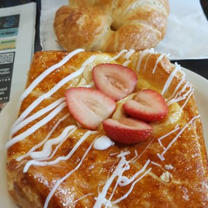

Exploring Austin
Breakfast
Upper Crust Bakery

Upper Crust is locally owned and has been part of Austin for over 28 years. We love Austin and are committed to the local community. We have a convenient, laid back central location that is perfect for lingering with paper or grabbing some quick coffee and breakfast on your way to work.